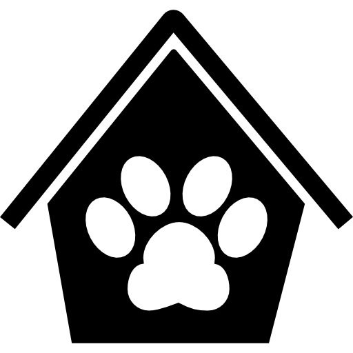Bienvenido a cuidapets
SERVICIOS
Que ofrecemos
- Cuidamos de tu mascota mientras tu estas trabando:
El funcionamiento de este servicio es como si fuera una guarderia de perros es decir el cliente nos deja a su mascota en nuestras instalaciones del mismo modo que harias en una guardria de peques, aqui te querido amigo estara completamente atendido y podra jugar con otros perretes de la guarderia, el precio incluye ademas de la estancia, el pienso de primeras marcas adaptado al peso y edad del animal, pero si tu mascota requiere un pienso especial o tu prefieres que le demos algun pienso especial, puedes traerlo y dejarlo en el casillero destinado a cada miembro de nuestra pequeña "gran familia", la tarifa basica incluye un horario de 8:00 de la mañana hasta las 20:00, puendo alargar dicho horario tanto por la mañana como por la tarde. existe la posibilidad de ir a recoger a tu mascota y devolverla a la hora incada. Ademas disponemos de servicio de paseador de perros.
Para ver las tarifas basicas y bonos, pasate por el apartado correspondiente. VER TARIFAS
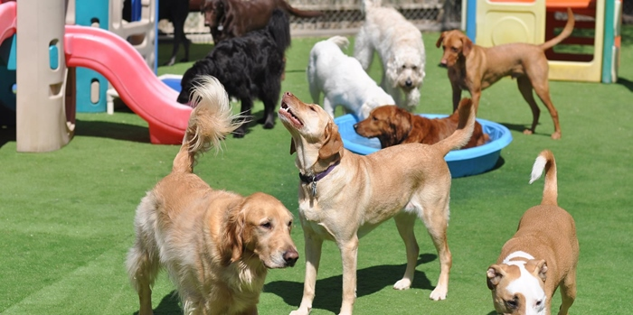
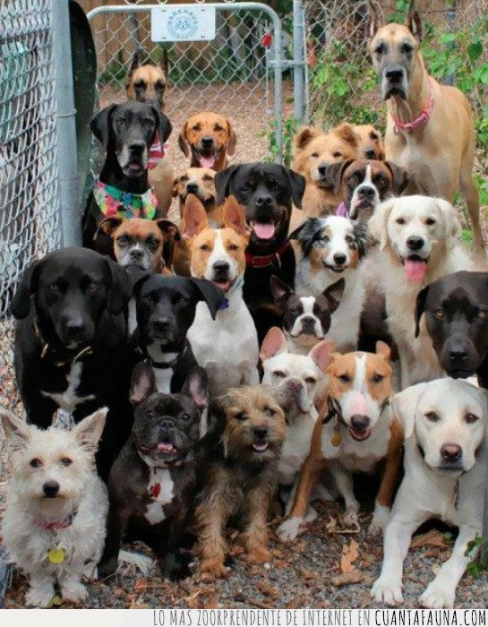
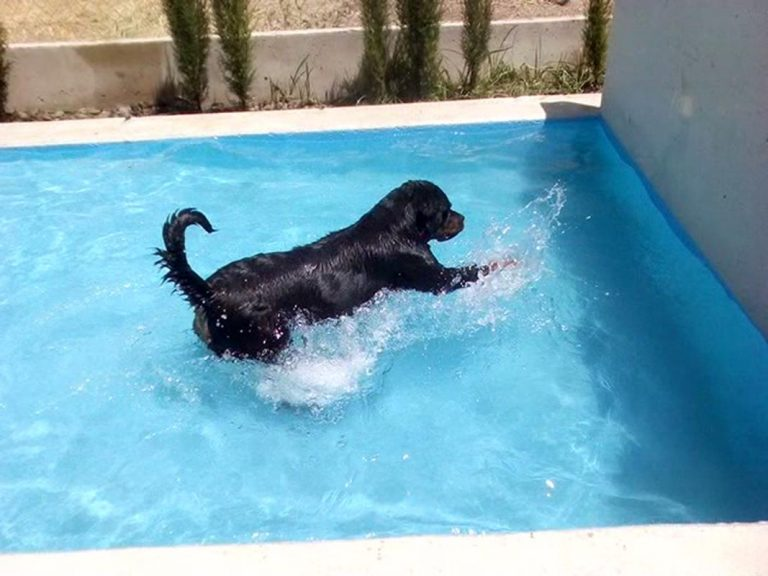
- Re-educamos a tu mascota:
Si lo deseas tambien podemos re-educar sanamente a tu mascota para cambiar ciertos habitos de manera que su comportamiento, para ello disponemos de un servicio de un "encantador de perros", que en caso de contratarlo vendria a nuestras instalaciones durante el periodo necesario para hasta que el animal cambie su actitud
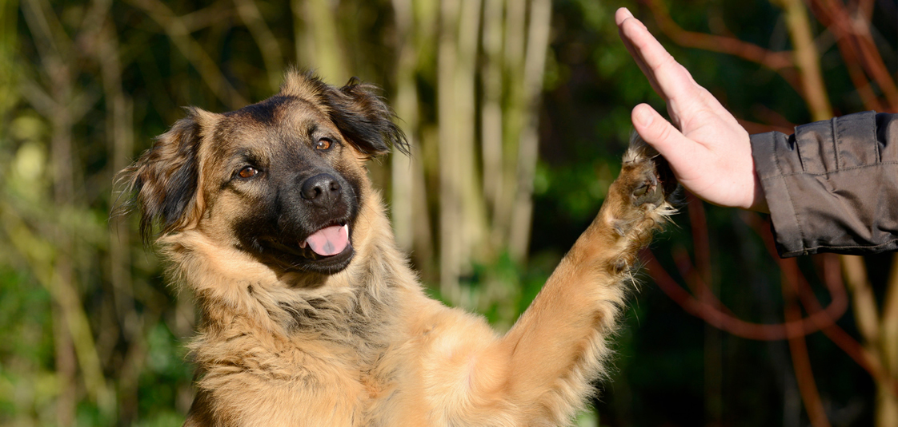
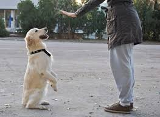
- Servicio de veterinario:
La persona responsable de esta importantisima seccion es como Daniella, disponemos de una consulta totalmente equipada incluso con quirofano para pequeñas cirujias, aqui es donde daniella nos demuestra cada dia su amor por los animales, preocupandose por el bienestar de nuestros queridos amigos de cuatro patas.
Este servicio esta incluido en el precio, mientras su mascota se encuentre en nuestras instalaciones, ademas ofrecemos servicio de analiticas, desparasitación o vacunas. Ademas tenemos servicio de peluqueria canina.
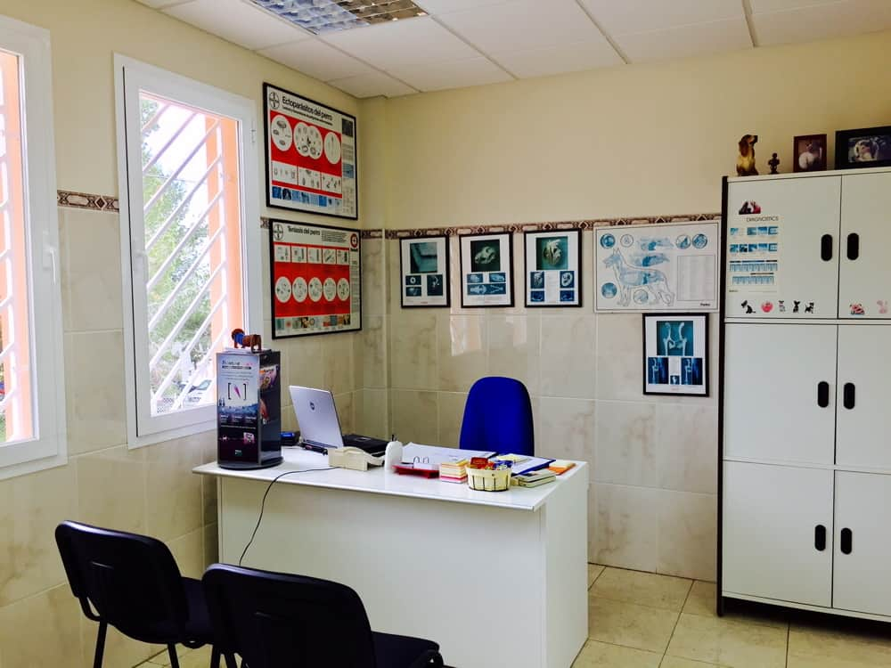
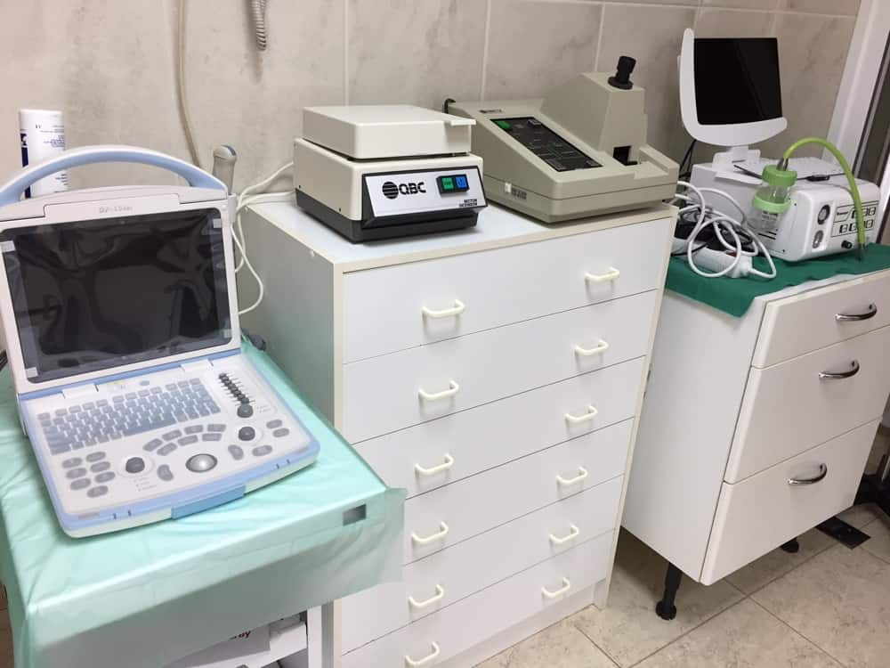
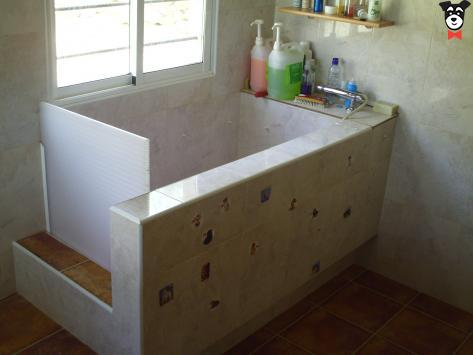
- Residencia de perros:
Disponemos de servicio de residencia por dias, fines de semana, semanas..., haz ese viaje que tanto deseas y despreocupate de buscar a alguien que cuide del perro, nosotros lo hacemos encantados, nuestras instalaciones estan perfectamente acondicionadas para dar alojamiento continuo a tu mascota, ademas podemos mandar fotos a los dueños para que vean el estado del animal y asi sentirse mas tranquilos, nuestras instalaciones estan previstas de nevulizadoras para los meses de mas calor poder bajar la temperatura hasta 10 grados, no olvidemos que tambien tenemos piscina perruna.
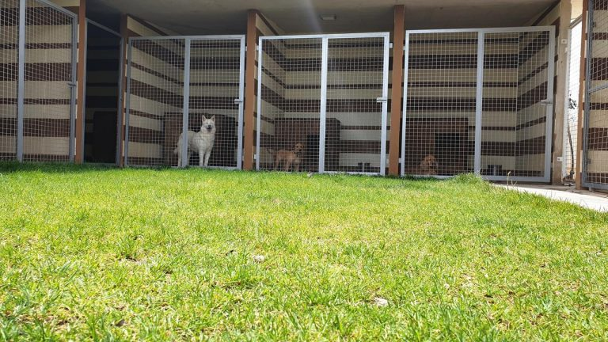
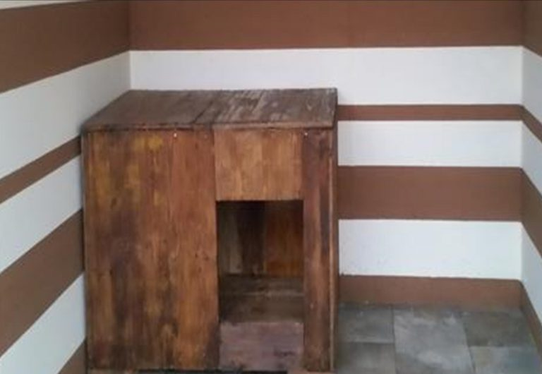
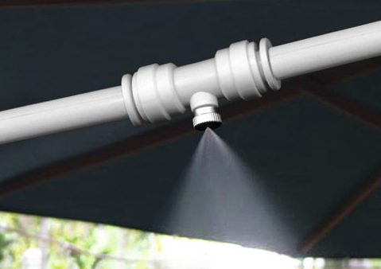